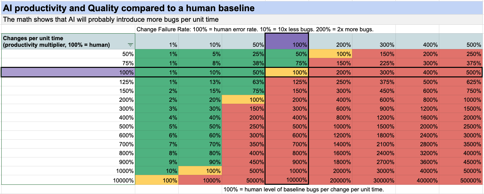

Superhuman AI coding still makes software worse.

AI is probably better than humans at writing code now.
But skill at coding is not exactly the same thing as skill at developing and maintaining software, and while AI can help there as well, a swarm of cowboy coder agents will get you to a legacy codebase which is hard to support and maintain very very quickly.
I believe this is for three reasons:
- The math of defect rates and velocity.
- Model collapse
- Context limits
The math of defect rates
Some percent of changes we make will be defective. Human teams range from 5% to over 30% according to DX's surveying.
If AI codes faster than us, at the same level of quality / defect rate, that means we get more bugs!
# Changes x Defects/Change = # Defects
This is true even if the AI is better than most humans, the speed means that you still get more defects and issues!
If a human developer has a change failure rate of say 10%, (1 in 10 changes causes a defect or issue), and AI is twice as good and only introduces bugs 5% of the time, but submits 10x as many changes, then you go from 1 bug per unit of time to 5 bugs per unit of time, so your velocity is up 10x but your defect rate is up 5x...
Now this assumes that the AI is better and not just faster.
if AI is faster and writes code that has a higher defect rate, then those numbers are worse. say the AI writes code that has twice the defect rate of humans on average, at 2x the speed, then our velocity is up 2x but our defect rate is up 4x!
For writing disposable software, this is fine and I do believe that we'll be writing tens or hundreds of times as much code as we were before, but the amount of code worth keeping is lower, and it still takes time and wrangling to keep the quality at a human level. Humans struggle to keep code quality high, and with AI it'll be harder.
AI can fix bugs as well, but if it makes 5x the bugs, then that reduces the productivity gain!
Model collapse
Model collapse is when a machine learning model is trained on synthetic data generated by another model. I believe that a form of this can happen in AI generated code bases, where the more of a codebase is AI generated the more likely it is that the model will start losing coherence as it tries to make changes. The text/token patterns become too self referential and the model is less able to make changes.
Context limits
As a software codebase grows in complexity and size, it takes more context / memory for an AI or human to understand enough to make changes. Humans and AI alike struggle to make changes on bigger systems, so as a system grows it becomes harder to grow further. This inclines all software projects to trend towards becoming a buggy mess, and AI gets us there faster.